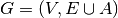

10.6. Partial routes and Assigments
Sometimes, while searching for a good solution, you find some promising partial routes or you may already know that some routes or partial routes should be part of a solution. Wouldn’t it be nifty to be able to fix some parts of the solution and let the CP routing solver assign the rest of the solution? Dream no more: this possibility is integrated in the RL and we detail it in this section.
10.6.1. A little bit of terminology
Before we go on, let’s agree on the terminology. Our routing problems are modelled with a graph 
with  the set of all vertices,
the set of all vertices,  the set of edges and
the set of edges and  the set of arcs. Here are key terms that we will
use throughout the rest of part III:
the set of arcs. Here are key terms that we will
use throughout the rest of part III:
- paths:
- We use path in the common graph theoretic sense. A path is a sequence of adjacent[1] edges and/or arcs with the possibility to traverse these edges and/or arcs one after the other[2]. The first and last vertices belong to the path and are called respectively start end end vertices.
- cycles:
- A cycle is a path such that the start and end vertices are the same.
- simple paths:
- A simple path is a path that doesn’t intersect itself.
- simple cycles:
- A simple cycle is a simple path such that the start and end vertices coincide.
- routes:
- A route is a simple path or simple cycle that connects a starting depot and an ending depot and that is traversed by only one vehicle.
- empty routes:
- An empty route is a pair of starting and ending depots that are assigned to the same vehicle.
- partial routes:
- A partial route is a simple path that is traversed by only one vehicle. The idea is to name “parts” of contiguous edges/arcs that could be extended - in both incoming and outgoing directions - to form a route. A route can be considered as a partial route only if the starting and ending depots are not the same. This partial route cannot be extended at both its end depot vertices but we still call it a partial route.
| [1] | Two edges are adjacent if they share a common vertex. |
| [2] | We don’t distinguish between paths with only edges (paths), only arcs (directed paths) or containing edges and arcs (mixed paths). In the same vein, we don’t distinguish between cycles with only edges (cycles), only arcs (circuits) or containing edges and arcs (mixed cycles). |
10.6.2. Locks and the ApplyLocksToAllVehicles() method
You can find the source code in the file vrp_locks.cc.
A lock is what we call internally an std::vector<RoutingModel::NodeIndex> that represents a partial route. Locks can be fixed (we prefer to say applied) before the search. Basically, this means that given a lock p corresponding to a vehicle v (again with the same abuse of notation):
NextVar(p[i]) == p[i+1] for all i and i+1 in p
and
VehicleVar(p[i]) == v for all i in p.
To apply the locks, use the ApplyLocksToAllVehicles() method:
std::vector<std::pair<RoutingModel::NodeIndex,
RoutingModel::NodeIndex> > depots(4);
// Internal depots are 1, 3, 4 and 7
// thus with the TSPLIB convention in this manual,
// the real depots are 2, 4, 5 and 8
depots[0] = std::make_pair(1,4);
depots[1] = std::make_pair(3,4);
depots[2] = std::make_pair(3,7);
depots[3] = std::make_pair(4,7);
...
RoutingModel routing(29, 4, depots); // 29 nodes, 4 vehicles
...
routing.CloseModel();
// Constructing partial routes
std::vector<std::vector<RoutingModel::NodeIndex> > p(3);
// first partial route
p[0].push_back(RoutingModel::NodeIndex(0));
p[0].push_back(RoutingModel::NodeIndex(2));
...
p[0].push_back(RoutingModel::NodeIndex(26));
p[0].push_back(RoutingModel::NodeIndex(7));
// second partial route
p[1].push_back(RoutingModel::NodeIndex(23));
p[1].push_back(RoutingModel::NodeIndex(18));
...
p[1].push_back(RoutingModel::NodeIndex(13));
...
if (!routing.ApplyLocksToAllVehicles(p, FLAGS_close_routes)) {
LOG(FATAL) << "Unable to apply locks...";
}
Here are a few remarks about the ApplyLocksToAllVehicles() method:
You can only call ApplyLocksToAllVehicles() if the model is closed (or you’ll trigger an assert()).
Partial routes are attached to the corresponding starting depots. For instance, p[1][0] is attached to the depot of the second route/vehicle. This means that partial routes constructed with the ApplyLocksToAllVehicles() method all start at a given depot.
The bool FLAGS_close_routes indicates if the routes are closed or not. If set to true, all the given partial routes are closed (i.e. the last vertex of each lock is connected to the corresponding end depot) and all the remaining transit vertices are deactivated. If set to false, the partial routes are not closed and the remaining vertices are not deactivated (already deactivated vertices remain deactivated).
You can only use transit nodes and each transit node can only be in one lock (no depot allowed in the locks).
You can add empty routes by adding an empty vector to the corresponding vehicle/route. In our example, route p[2] is empty and can thus be completed by the CP routing solver (if FLAGS_close_routes is set to false). The remaining routes that were not defined in p are closed (i.e. NextVar(routing.Start(v)) == routing.End(v) for all v >= p.size()).
You can get the corresponding Assignment with the PreAssignment() method:
const Assignment* const solution_from_locks = routing.PreAssignment();
Finally, ApplyLocksToAllVehicles() returns true if the all the locks could be applied and false otherwise.
Warning
Pay close attention to all the remarks before using the ApplyLocksToAllVehicles() method.
Now, let’s solve this instance:
const Assignment* solution = routing.Solve();
and inspect the solution:
if (solution != NULL) {
// Solution cost.
LG << "Obj value: " << solution->ObjectiveValue();
// Inspect solution.
std::string route;
for (int vehicle_nbr = 0; vehicle_nbr < 4; ++vehicle_nbr) {
route = "";
for (int64 node = routing.Start(vehicle_nbr);
!routing.IsEnd(node);
node = solution->Value(routing.NextVar(node))) {
route = StrCat(route,
StrCat(routing.IndexToNode(node).value() + 1,
" -> "));
}
route = StrCat(route,
routing.IndexToNode(
routing.End(vehicle_nbr)).value() + 1 );
LG << "Route #" << vehicle_nbr + 1 << std::endl
<< route << std::endl;
}
} else {
LG << "No solution found.";
}
Let’s refresh our memory about the data instance before we look at the results.
The routes depots are:
- route 1: 2 and 5;
- route 2: 4 and 5;
- route 3: 4 and 8;
- route 4: 5 and 8.
The defined locks are:
- p[0]: 1 -> 3 -> 18 -> 27 -> 22;
- p[1]: 24 -> 19 -> 16 -> 14;
- p[2]:
The fact that we only applied locks for the 3 first routes while the model has 4 routes means that the fourth route will not be used in the search.
If you set FLAGS_close_routes to true, you’ll get a partial solution that is not feasible and the following expected result:
No solution found.
If you set FLAGS_close_routes to false, the partial solution made up by the locks is completed by the CP routing solver:
Obj value: 804
Route #1
2 -> 1 -> 3 -> 18 -> 27 -> 22 -> 26 -> 5
Route #2
4 -> 24 -> 19 -> 16 -> 14 -> 17 -> 21 -> 25 -> 29 -> 5
Route #3
4 -> 6 -> 7 -> 9 -> 10 -> 11 -> 12 -> 13 -> 15 -> 20 -> 23 -> 28 -> 8
Route #4
5 -> 8
If you find the ApplyLocksToAllVehicles() method too restrictive for your needs, you can always construct a partial Assignment and pass it to the CP routing solver as we will do in the next sub-section.
Locks and online problems
Locks can be applied when you have an idea of partial routes that should be fixed in a solution for one reason or the other. A type of problems where you often apply locks is worth mentioning: the so-called online or dynamical problems. These problems are dynamic in the sense that the instances gradually change over time: some parts of these instances change with time or are only revealed over time.
For a VRP, you may think of actual drivers that are trapped in congested areas: you must then adapt the routes to follow (to reroute) (or be prepared for some unpleasant consequences). You don’t want/have the time or the resources to recompute a solution from scratch. The partial routes not affected by congestion might still be optimal after all.
Problems where the instances are completely known - like all the problems presented in this manual - are then coined as offline problems by contrast.
10.6.3. Assignments and partial Assignments
You can find the source code in the file vrp_IO.cc.
The RL provides several helper methods to write and read Assignments.
First, you have the shortcut methods:
bool WriteAssignment(const string& file_name) const; Assignment* ReadAssignment(const string& file_name);
The first method writes the current solution to a file and the second method loads the Assignment contained in the file as the current solution. The format used is the protocol buffer from Google[3]. These two methods are shortcuts. WriteAssignment() takes the current solution and invokes its Save() method while ReadAssignment() invokes the Load() method of an Assignment and restores this Assignment as the current solution with the RestoreAssignment DecisionBuilder.
To test if everything went fine, use WriteAssignment() and ReadAssignment(). The former returns true if the Assignment was successfully saved and false otherwise. The latter returns NULL if it could not load the Assignment contained in the file as the current solution.
If you already have an Assignment at hand, you can restore it as the current solution with
Assignment* RestoreAssignment(const Assignment& solution);
Again, if solution is not valid, RestoreAssignment() returns NULL. As usual with the RestoreAssignment DecisionBuilder, you don’t need to provide a complete Assignment. If needed, the CP solver will complete the solution. For the RL, this DecisionBuilder will be the classical default DecisionBuilder on the NextVar() variables with the CHOOSE_FIRST_UNBOUND and ASSIGN_MIN_VALUE strategies.
You can also add extra interesting IntVar variables to the routing Assignment:
void AddToAssignment(IntVar* const var);
Second and more interestingly, the RL provides methods to translate an Assignment into and from an std::vector<std::vector<RoutingModel::NodeIndex> >. The vector is a little bit peculiar as it doesn’t hold the starting and ending depots:
RoutingModel routing(); // as above ... const Assignment* solution = routing.Solve(); ... std::vector<std::vector<RoutingModel::NodeIndex> > sol; routing.AssignmentToRoutes(*solution, &sol);
In the file vrp_IO.cc, we print the vector and for the instance above, we obtain:
Solution saved into an std::vector of size 4 Route #1 with starting depot 2 and ending depot 5 1 -> 3 -> 18 -> 27 -> 22 -> 26 Route #2 with starting depot 4 and ending depot 5 24 -> 19 -> 16 -> 14 -> 17 -> 21 -> 25 -> 29 Route #3 with starting depot 4 and ending depot 8 6 -> 7 -> 9 -> 10 -> 11 -> 12 -> 13 -> 15 -> 20 -> 23 -> 28 Route #4 with starting depot 5 and ending depot 8
As you can see, no depot is saved into this std::vector. This is exactly the kind of std::vector that you need to pass to RoutesToAssignment():
Assignment* const restored_sol = routing.ReadAssignmentFromRoutes(sol, false);
This method restores the solution contained in the vector as the current solution.
In contrast to the RoutesToAssignment() method, the solution passed to ReadAssignmentFromRoutes() must be a complete solution, i.e. all NextVar() mandatory variables must be assigned.
We also remind the reader that in contrast to all other loading methods presented here, RoutesToAssignment() doesn’t reconstruct a feasible solution and deals only with NextVar() variables. If your model has many complicated side constraints (like Dimensions with slack variables), the CP routing solver might need some time to reconstruct a feasible solution from the NextVar() variables.
| [3] | This format is a multi-platform compatible binary format for serializing structured data. See their website or the section Serializing where we reveal everything you always wanted to know about serializing with the or-tools library. |
Partial Assignments and the RL
Partial Assignments in the Routing Library have nothing special and you can use partial Assignments in a similar way with the CP solver. The RL provides several handy helper methods that you can use in your own code. Aside from the defensive testings, these methods are only several lines long.
Google or-tools |
User's Manual
Google search
Welcome
Tutorial examples
Current chapter
10. Vehicule Routing Problems with constraints: the capacitated vehicle routing problem
Previous section
10.5. Multi-depots and vehicles